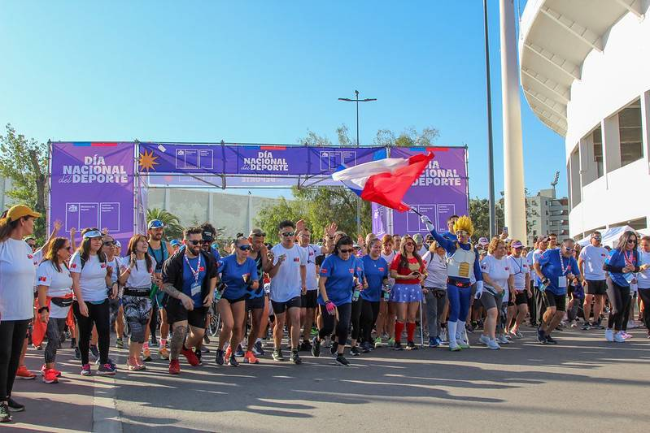
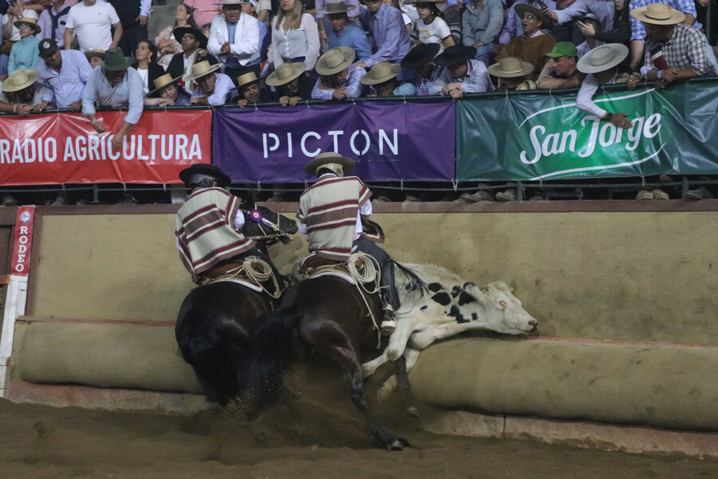

Noticias de Deporte
| Imagen | Título | Categoría | Texto del artículo |
|---|---|---|---|
|
 |
Día Nacional del Deporte: Conoce todas las actividades deportivas gratuitas | Deporte Nacional |
Una serie de actividades pensadas para toda la familia tendrá la celebración del Día Nacional del Deporte, el cual fue lanzado con la presencia de la ministra del Deporte, Natalia Duco. En ese contexto se anunció que una de las actividades principales será la segunda versión de "La Corrida Más Grande de Chile", un evento que reunirá a chilenos en todas las regiones del país. La corrida se realizará el sábado 11 de abril con corridas simultáneas en todas las capitales regionales, con una participación proyectada de más de 100.000 personas a nivel nacional, superando los 70.000 inscritos de 2025. |

|
Conoce "Historias del futuro", la emotiva serie documental sobre el deporte paralímpico que se estrena este 9 de abril | Paralímpico |
Dirigida por Rolando Opazo con el apoyo de Bupa Chile y el Comité Paralímpico de Chile (COPACHI), esta pieza audiovisual retrata la travesía de seis deportistas que participaron en los Parapanamericanos Juveniles de 2025 y su preparación para los Juegos Paralímpicos de Los Angeles 2028. Agustín, Patricio, Ignacio, María Jesús, Camila y Rocío son los seis deportistas juveniles paralímpicos que protagonizan "Historias del futuro". Según el director Opazo, el documental no se centró en la competencia ni en el podio, sino en "la historia previa al certamen, en la dimensión humana de estos jóvenes y de sus familias". |
|
 |
Rodeo, austeridad y el deporte nacional: la "profunda contradicción" de impulsar una actividad que "ya no representa a todo Chile" | Controversia |
Las recientes declaraciones de la ministra del Deporte, Natalia Duco, en defensa del impulso al rodeo en Chile generaron una oleada de críticas desde distintos sectores. Sus palabras apuntaron a fortalecer su desarrollo mediante políticas públicas, no solo como disciplina deportiva, sino también como expresión de identidad nacional. La tenista de playa Francisca Zúñiga fue categórica en su rechazo: "Me parece una práctica muy cruel. Y lo más grave es que no se trata solo de maltrato animal, sino se trata de maltrato animal legitimado, normalizado y validado por el peso de la costumbre y por el respaldo institucional". La deportista añadió que "que algo sea tradicional no significa por sí solo que sea justo". |